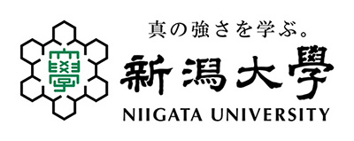
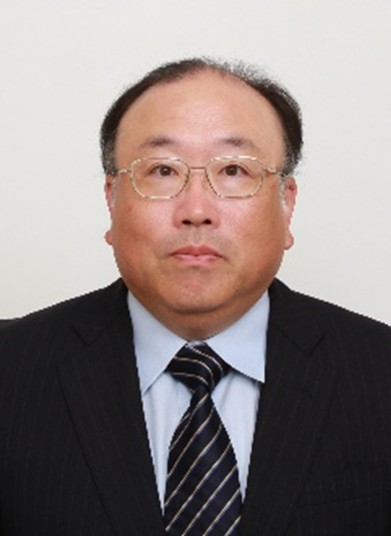
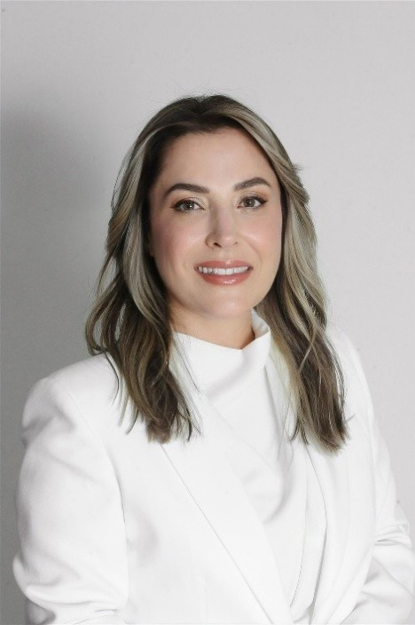
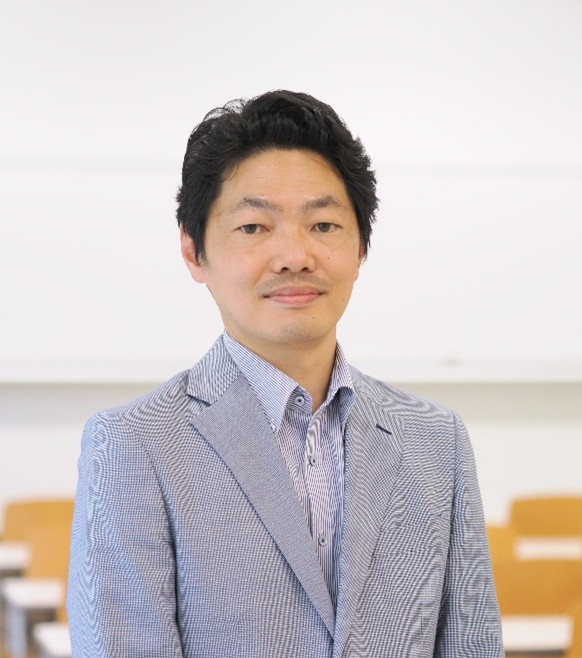

Organizing Committee組織委員会Organizasyon Komitesi
Organizers & Guest Editors主催者・ゲストエディターOrganizatörler ve Misafir Editörler
🏛️
JSPS Bilateral Program (Japan–Türkiye / TÜBİTAK)This seminar is conducted within the JSPS Bilateral Program framework. JSPS supports international travel, domestic travel, and seminar costs for the Japanese research team. Learn more: jsps.go.jp
JSPS二国間プログラム（日本・トルコ / TÜBİTAK）本セミナーはJSPS二国間プログラムの枠内で実施されます。JSPSは日本研究チームの国際・国内渡航費およびセミナー経費を支援します。詳細：jsps.go.jp
JSPS İkili Programı (Japonya-Türkiye / TÜBİTAK)Bu seminer, JSPS İkili Programı çerçevesinde yürütülmektedir. JSPS, Japon araştırma ekibinin uluslararası/yurt içi seyahat ve seminer masraflarını desteklemektedir. Detaylar: jsps.go.jp
Host Institutions (Organizers)主催機関Ev Sahibi Kurumlar

Faculty of Agriculture, Niigata University新潟大学農学部Niigata Üniversitesi Ziraat Fakültesi
Institute of Agriculture · Niigata 950-2181, Japan農学部 · 新潟市 950-2181Ziraat Fakültesi · Niigata 950-2181, Japonya

Faculty of Engineering, Ege Universityエーゲ大学工学部Ege Üniversitesi Mühendislik Fakültesi
Dept. of Civil Engineering · Bornova, Izmir 35100, Türkiye土木工学科 · ボルノヴァ, イズミル 35100İnşaat Mühendisliği Bölümü · Bornova, İzmir 35100
Guest Editors — MDPI Buildings Special Issueゲストエディター — MDPI Buildings SIMisafir Editörler — MDPI Buildings Özel Sayısı

Prof. Dr. Tetsuya Suzuki
Leading Guest EditorリードゲストエディターBaş Misafir Editör
Niigata University
Damage Mechanics · NDT · Acoustic Emission · 3D Image Analysis · Deep Learning損傷力学 · NDT · 音響放射 · 3D画像解析 · 深層学習Hasar Mekaniği · NDT · Akustik Emisyon · 3B Görüntü Analizi · Derin Öğrenme

Prof. Dr. Ninel Alver
Co-Guest Editor共同ゲストエディターOrtak Misafir Editör
Ege University
NDT of Civil Infrastructure · Acoustic Emission · Ultrasonic · Infrared Thermography · Structural Monitoring土木インフラNDT · 音響放射 · 超音波 · 赤外線サーモグラフィ · 構造モニタリングSivil Altyapı NDT · Akustik Emisyon · Ultrasonik · Kızılötesi Termografi · Yapısal İzleme

Assoc. Prof. Dr. Kentaro Ohno
Co-Guest Editor共同ゲストエディターOrtak Misafir Editör
Tokyo Metropolitan University
Concrete Structure Inspection · Acoustic Emission · Ultrasonic Testing · Impact Elastic Waveコンクリート構造物点検 · 音響放射 · 超音波試験 · 衝撃弾性波Beton Yapı Muayenesi · Akustik Emisyon · Ultrasonik Test · Darbe Elastik Dalgası